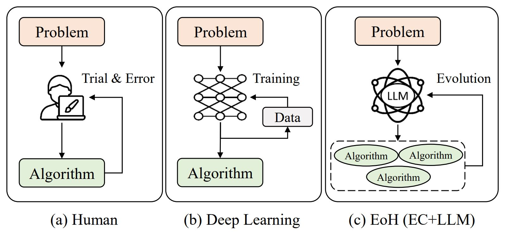
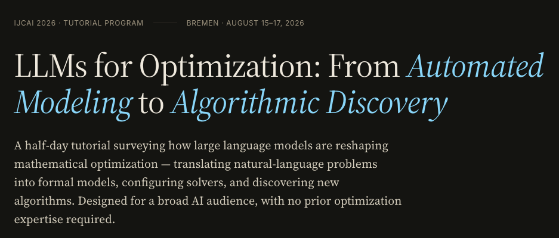

Postdoc Researcher
Department of Physics, University of Zurich &
Department of Mathematics, ETH Zurich
I am a Postdoc researcher in the Department of Physics, University of Zurich and the Department of Mathematics, ETH Zurich, working with Prof. Nicola Serra and Prof. Alessio Figalli.
Previously I was a Postdoc Fellow in Prof. Qingfu Zhang's Group, Department of Computer Science, City University of Hong Kong. I completed my PhD at CityU supervised by Prof. Qingfu Zhang, and my master's and bachelor's degrees at Northwestern Polytechnical University supervised by Prof. Zhonghua Han.
My research interests include automatic algorithm design, artificial intelligence, optimization algorithms, and their applications to real-world problems.
Full list on Google Scholar
A Systematic Survey on Large Language Models for Algorithm Design
ACM Computing Surveys, 2026
EoH-S: Evolution of Heuristic Set Using LLMs for Automated Heuristic Design
AAAI, 2026
Multi-objective Evolution of Heuristic Using Large Language Model
AAAI, 2025
Evolution of Heuristics: Towards Efficient Automatic Algorithm Design Using Large Language Model
ICML, 2024
Multi-task Learning for Routing Problem with Cross-problem Zero-shot Generalization
SIGKDD, 2024
A platform for automated algorithm design with Large Language Models. IEEE FLAME Second Prize winner.
View on GitHub
Evolution of Heuristics — efficient automatic algorithm design using LLMs. ICML 2024 Oral (top 1.5%).
View on GitHub